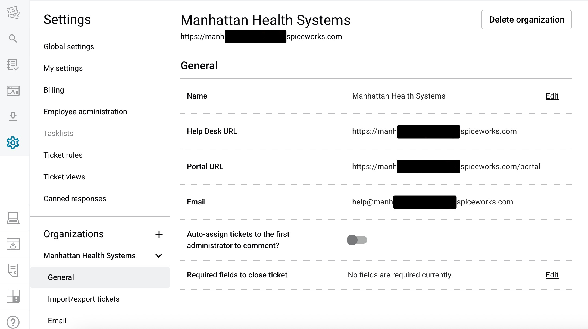
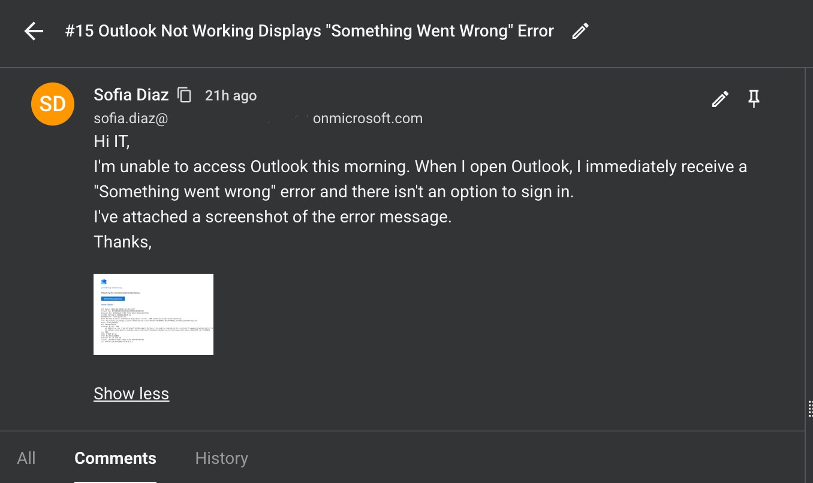
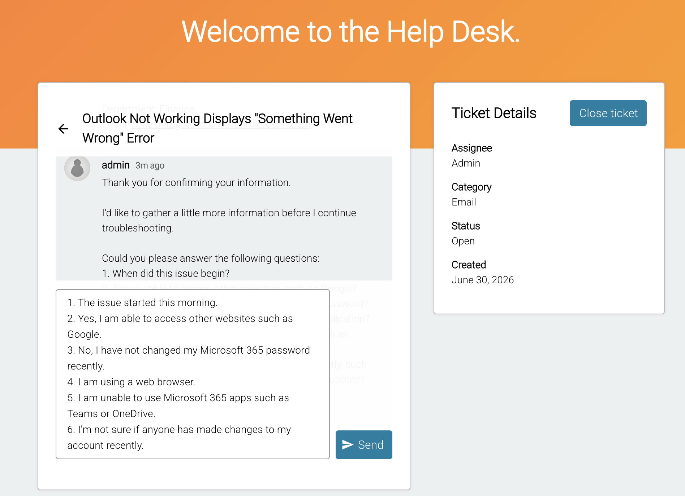

Ticketing System Workflow Using Spiceworks
This project simulates a real-world IT support ticket lifecycle using Spiceworks ITSM, supporting Manhattan Health Systems, the fictional organization featured throughout this portfolio. It follows a single ticket from creation and triage through troubleshooting, root cause analysis, resolution, and closure, while investigating in the Microsoft 365 Admin Center and Microsoft Entra ID, the same tools used across my other projects.
What is a Ticketing System?
A ticketing system allows end users to report technical issues, and allows the IT support team to track, manage, and resolve them from submission to close. Tickets can be submitted through a self-service portal or created by a technician on behalf of a user during a phone call. Each ticket follows a structured workflow to ensure consistent, efficient, and well-documented support.
Common Ticket Information
- Organization Name
- Issue Description
- Attachments
- Category
- Priority Level
- Assigned Technician
- Status
Technician Responsibilities
- Communicate with the user
- Ask questions and troubleshoot the issue logically
- Document findings and escalate if needed
- Resolve the incident
- Close the ticket
There are other common ticketing platforms such as ServiceNow, Jira Service Management, and Freshservice. Although each platform has a different interface, they all follow the same core IT service management (ITSM) workflow.
Ticket Status Lifecycle
New
Ticket has been submitted.
Open / Assigned
Ticket has been picked up and assigned to a technician. Greet the user and confirm identity/device.
In Progress
Technician is actively working the issue, asking questions and gathering info (when did it start, what changed, and the last time it worked).
Troubleshooting
Technician is applying fixes, starting with the simplest solution before moving to more complex ones.
Waiting / On Hold
Waiting on more info, confirmation, or action from the user.
Escalated
If unsolved, the ticket is passed to a higher tier or specialized team, along with notes on what's already been tried, for advanced troubleshooting.
Resolved
The issue has been fixed and awaits user confirmation.
Documentation & Ticket Closure
Document everything: what was tried, what fixed the issue, and what to do if it happens again.
Then close the ticket.
Every support ticket is categorized and assigned a priority based on its business impact. This helps IT teams organize workloads and respond to critical issues efficiently.
Common Ticket Categories
Software
Applications, operating systems, Microsoft 365, cloud services.
Hardware
Computers, monitors, printers, keyboards.
Network
Wi-Fi connectivity, VPN access, DNS, internet issues.
Account Access
Password resets, MFA, account lockouts, licensing, permissions.
Priority Levels
Low
Minor issue with little or no business impact.
Users can continue working while the issue is addressed.
Medium
Affects one user or a small group.
Work is interrupted but the issue is not business critical.
High
Affects multiple users, an entire department, or a critical business service.
Requires immediate attention to minimize business impact.
What is an SLA?
A Service Level Agreement (SLA) defines how quickly a ticket should be responded to and resolved, based on its priority level. SLAs help IT teams stay accountable and give end users a clear expectation of when they'll hear back, rather than leaving response times up to chance.
Low Priority
Response within 1 business day. Resolution within 3-5 business days.
Medium Priority
Response within 1 hour. Resolution within 1 business day.
High Priority
Response within 15-30 minutes. Resolution as soon as possible.
These targets are typically set by IT leadership based on business needs. Once defined, tools like Spiceworks can be configured to track SLA timers and flag tickets at risk of breaching their target.
Ticket Submission: Sofia Sends a Ticket
For this demonstration, Sofia Diaz submitted a support request through the Spiceworks self-service portal after experiencing an Outlook sign-in issue. The ticket included an issue summary, detailed description, priority level, and category before being assigned for investigation.



Incident Classification
Sofia, from Finance, submitted a ticket after losing access to Microsoft Outlook, cutting her off from all work email. Since the incident affected only one employee and no company-wide outage occurred, the ticket was classified as a Medium Priority incident.
Category
Email / Microsoft 365
Priority
Medium
Status
New
SLA Goal
Respond within 1 hour, per Medium priority SLA.
Applying a priority level before troubleshooting ensures that incidents are addressed according to business impact while maintaining service level expectations.
Ticket Assignment & User Verification
After receiving the ticket, I assigned it to myself and acknowledged the request. I then asked the user to verify their identity so I could locate their account by confirming the following information:
- Full Name
- Department
- Email Address


Asking the Right Questions
The possible root cause of this issue could be anything — it could be an update we made in our organization recently, internet being down, an incorrect password, an issue with the application itself, or maybe missing licenses. So before making any account changes, I gathered additional information to help eliminate possible causes and determine the root cause of the issue.
- When did the issue begin?
- Is anyone else having the same issue?
- Can the user access other websites?
- Has the password recently been changed?
- Is Outlook being accessed through the desktop app or web browser?
- Can the user access Teams or other MS365 apps?
- Have any recent changes been made to the Microsoft 365 account?
These questions helped determine whether the issue was related to internet connectivity, authentication, Outlook itself, Microsoft 365 services, or the user's account configuration.


Internal Documentation
Based on the user's responses, I documented my findings using an internal note. Sofia stated she was unable to use any Microsoft 365 apps. Since multiple Microsoft 365 services were affected, not just Outlook, the evidence pointed toward an issue with her Microsoft 365 account itself, rather than Outlook alone. Since access to these services depends on having an assigned license, I decided to check her licensing next.

Investigation & Troubleshooting
I opened the Microsoft 365 Admin Center and navigated to Users → Active Users → Sofia Diaz. During the investigation, I discovered that the user's Microsoft 365 Business Premium license had been removed. Without an assigned license, Outlook, Exchange Online, Teams, OneDrive, and other Microsoft 365 services were unavailable.
I reassigned the Microsoft 365 Business Premium license to restore access.


Confirming Resolution
After reassigning the license, I informed the user that she was missing the Microsoft 365 Business Premium license and asked her to give it some time and sign in again. The user confirmed that Outlook and other Microsoft 365 applications were working again.


Ticket Closure
Before closing the incident, I documented the root cause, troubleshooting steps, and verification that the issue had been successfully resolved. Complete documentation ensures future technicians have a clear record of the incident if additional support is ever required or if the same problem occurs again.

Business Impact
The issue prevented Sofia, a Finance employee, from accessing Outlook, cutting her off from email entirely. For someone in Finance, that meant no access to invoice approvals, vendor payment requests, or client correspondence, communication that often comes with its own deadlines. She could still work on tasks that didn't depend on email, but anything time-sensitive was effectively on hold until access was restored.
Resolution Summary
Root Cause
The user's Microsoft 365 Business Premium license had been removed, preventing access to Outlook and other Microsoft 365 services.
Resolution
Reassigned the Microsoft 365 Business Premium license through the Microsoft 365 Admin Center, restoring all assigned services.
Verification
Confirmed the user successfully signed into Outlook and verified Teams, OneDrive, and other Microsoft 365 services were working correctly before closing the ticket.
Key Takeaway
- Greet and acknowledge the user.
- Follow a structured, logical troubleshooting process.
- Always verify the user's identity before troubleshooting.
- Document every troubleshooting step using internal technician notes.
- Ask questions and maintain clear communication with end users.
- Verify that the issue is fully resolved before closing the ticket.
- If unresolved, escalate to the next tier to minimize downtime, with proper documentation of what's already been tried.